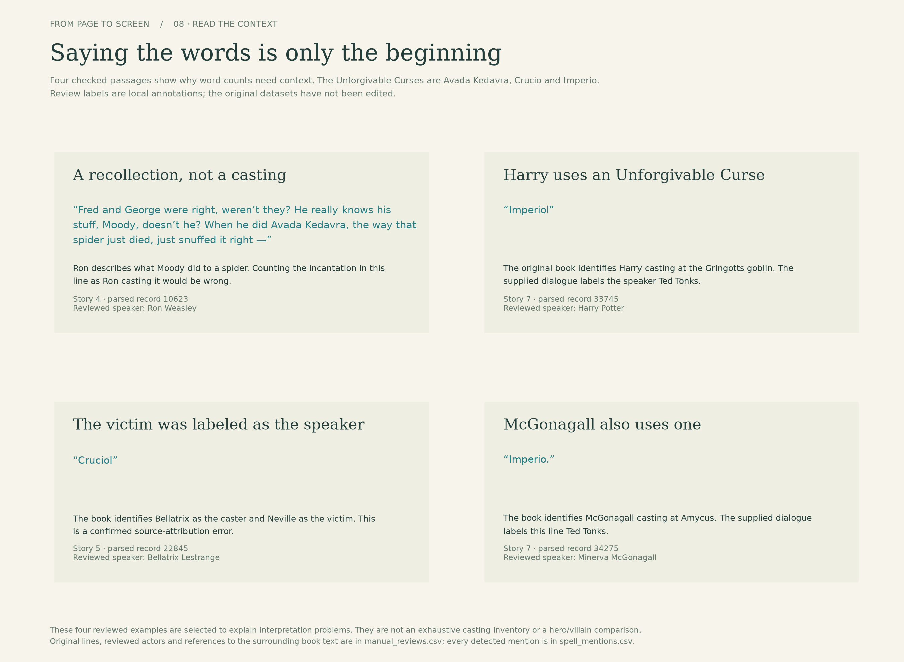

The spells that stand out

Twenty common families, adjusted for dialogue length. Strict book spellings remain visible.
From page to screen / spell language
A series-wide analysis of incantations and spell names in character dialogue. Compare book and film frequencies, then inspect the words in context. A spell mention is not automatically a casting event.
All NLP figuresMethods & findingsEvery detected mentionChecked context examplesSpeaker–spell network
Corpus rates follow the spelling-variant toggle below. The remaining filters change the evidence list.
Twenty common families, adjusted for dialogue length. Strict book spellings remain visible.
Circle = book. Triangle = film. Marker area represents normalized frequency.

Recollections, casting attempts and speaker-label mistakes need different interpretations.
Source speaker labels are preserved. Selected reviewed cases show the actor indicated by surrounding book narration or the film transcript. Most matches have not been reviewed for casting.
Primary rates count full incantation forms, including an explicit list of book OCR variants and the film transcription “Avada Kadavra.” Unforgivable spell names such as “Cruciatus” are available separately. Pronunciation variants and partial starts are excluded from primary rates. Silent casting, missing text and spell forms outside this curated inventory cannot be counted from this dialogue.
All words in the supplied dialogue form the denominators, including Unknown-speaker lines. No character word threshold is used. The final two films combine into story seven. The figures group a few explicit variants into spell families; the explorer identifies exact incantations.
“Incantation-only line” describes text shape, not casting success. Selected reviews reference original narration or nearby transcript lines; film video has not been independently reviewed. Corrections are annotations only. Neighboring dialogue is restricted to the same source/chapter and retains supplied speaker labels.
Spell/context PPMI uses a ±5-token window in one dialogue line, masking spell spans and the target's own repeated components. Many incantations are isolated, leaving very little context evidence. The supported report is in spell_contexts.csv. The exported bipartite network links supplied speaker labels to referenced spell families, without inferring casters or targets.
Spell inventory: official spell guide. The three Unforgivable Curses follow the official encyclopedia. Full choices, limitations and input hashes are recorded alongside the results.